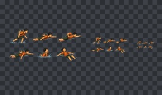
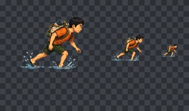
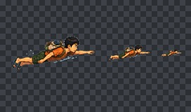
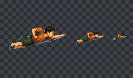
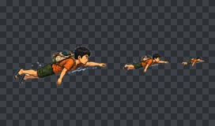
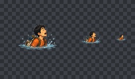
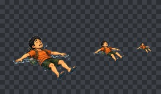
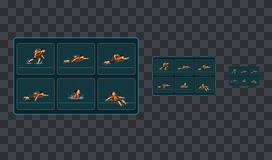

FORGE QUALITY GATE · job_20260824152541_e93cada7통과
100/100
파일 11개 · 오류 0개 · 주의 0개

mr-kim-swim-surface-cycle-a-atlas.png
1536 × 1024자동 검사 항목 통과

swim-shore-entry.png
512 × 512자동 검사 항목 통과

swim-surface-pull-a.png
512 × 512자동 검사 항목 통과

swim-surface-pull-b.png
512 × 512자동 검사 항목 통과

swim-surface-recover.png
512 × 512자동 검사 항목 통과

swim-shallow-duck-resurface.png
512 × 512자동 검사 항목 통과

swim-exhausted-float.png
512 × 512자동 검사 항목 통과

mr-kim-swim-actual-size-review-1280x800.png
1280 × 800자동 검사 항목 통과
mr-kim-swim-manifest.json
3 KB자동 검사 항목 통과
mr-kim-swim-visual-qa.json
3 KB자동 검사 항목 통과
mr-kim-swim-handoff.txt
1 KB자동 검사 항목 통과